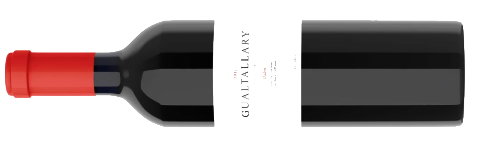

Somos pioneros en Mendoza y en los vinos de altura.
La construcción de nuestra bodega comenzó en el año 2020 y fue inaugurada en el año 2023.
El edificio es un homenaje a la montaña, que define tanto el clima como los suelos de la región.
La construcción se realizó con elementos naturales, piedras del lugar, redondas, blancas y calcáreas.
Nuestra primera botella:

Terroir
Bodega El Vínculo se encuentra en el corazón
de Gualtallary, Tupungato,
a los pies de la cordillera
de los Andes, en el camino del vino.
Con 330 días de sol al año,
marcada amplitud térmica e insolación lenta reúne condiciones excepcionales.
Los suelos son aluvionales, arenosos, con base de piedra con sedimentos de carbonato de calcio.
Esta conjunción produce vinos extraordinarios reconocidos como los mejores de Argentina
y Sudamerica.